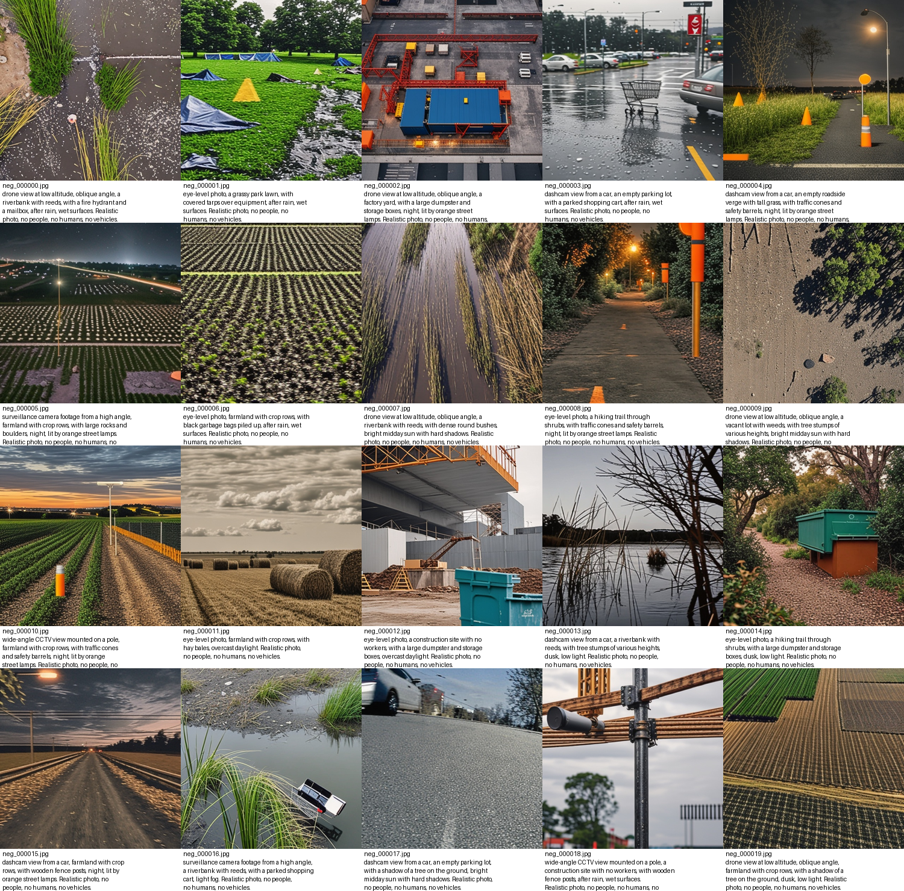
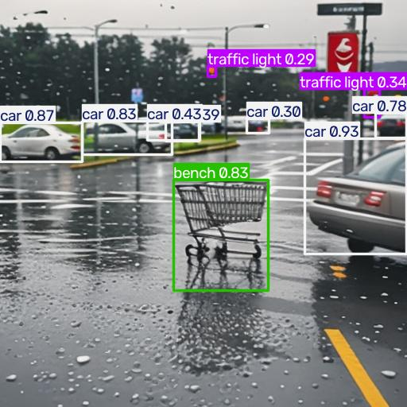
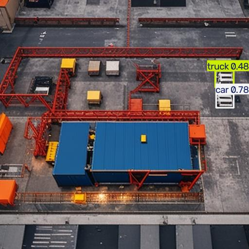
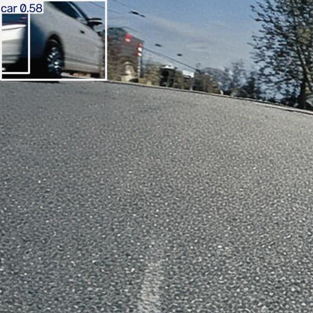
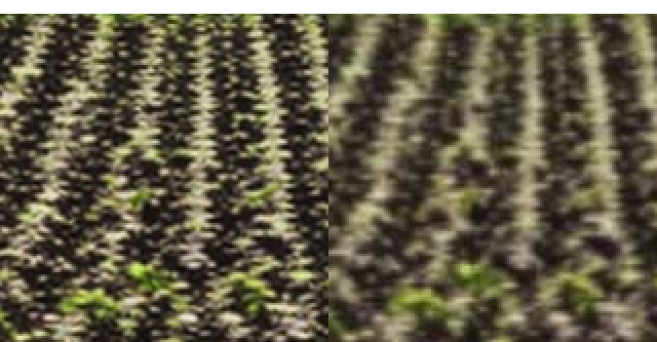
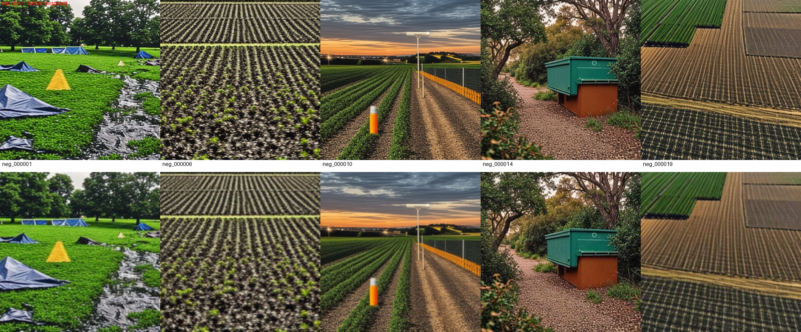
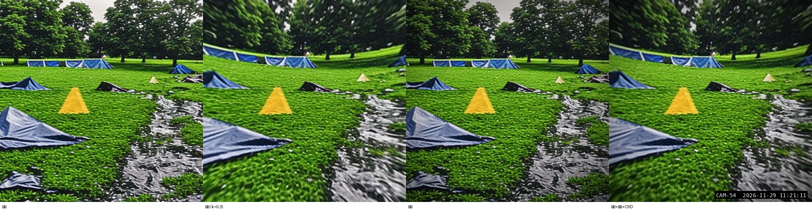
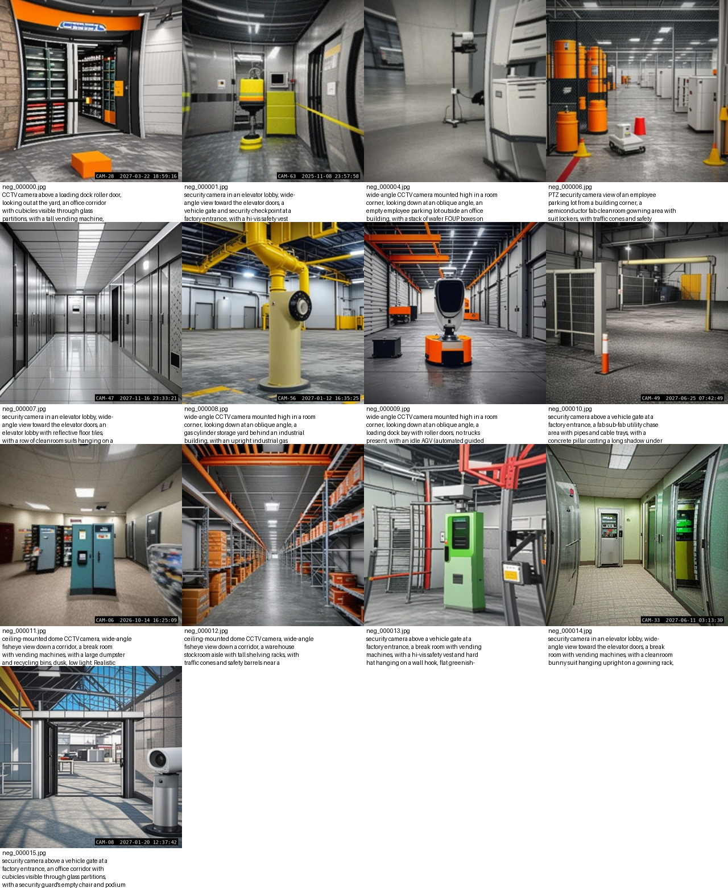
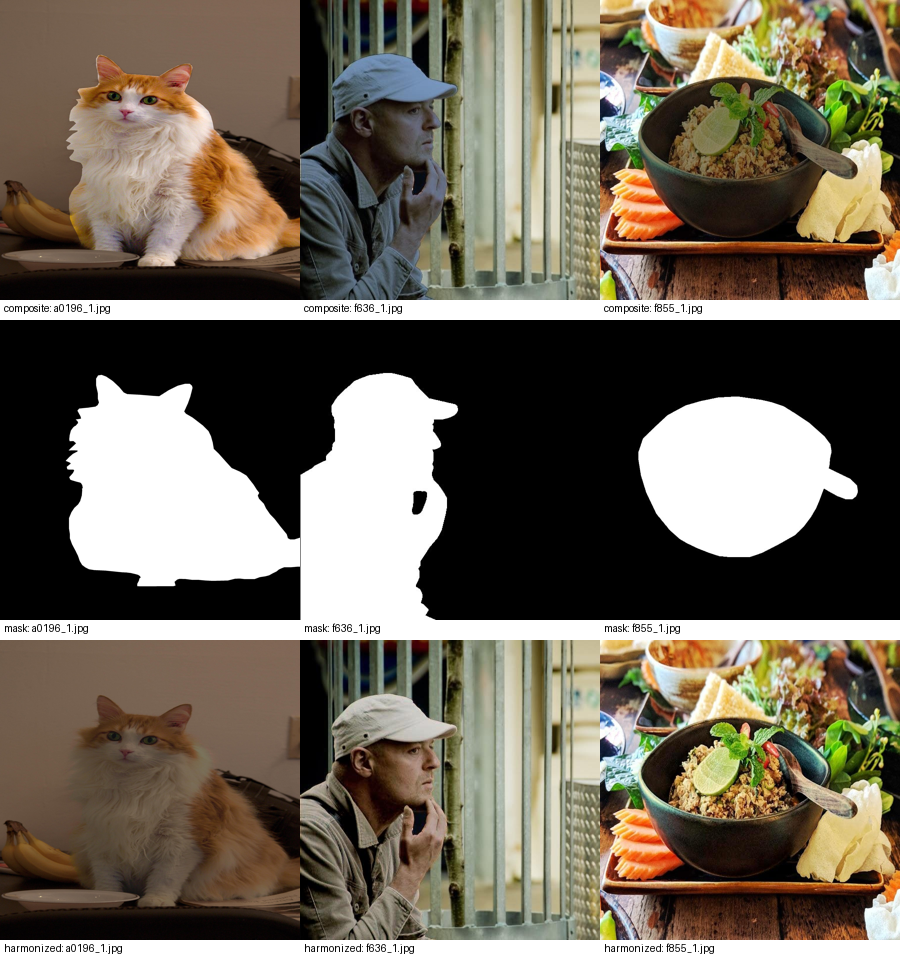
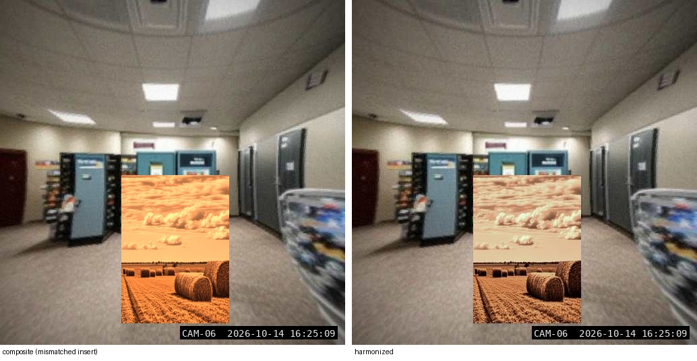

syngen_od ｜ 不蒐集新資料、用影像生成/編輯模型（Qwen-Image / Qwen-Image-Edit）合成訓練資料，解決上線後的漏偵測與誤判問題
目前上線的物件偵測模型，是以 COCO 資料集訓練出的通用模型（person、car 等通用類別），
部署在實際的 CCTV 即時監控場景中運作。上線後觀察到兩類錯誤：
標準解法是蒐集更多真實場景資料重新標註訓練，但訓練模型所在的環境被限制、不能對外蒐集新資料 （沒有網路存取、無法匯入新的現場影像），因此退而求其次：用生成式影像模型在既有的 COCO 影像基礎上 「合成」出像誤判/漏偵測場景的訓練資料，看能不能在不違反資料限制的前提下改善模型。
核心想法分兩條路線，分別對應上面兩種錯誤：
用 Qwen-Image（文字生成影像）直接生成「長得像人/車但其實不是」的場景 （土堆、石頭、樹樁、垃圾袋、帳篷防水布⋯），標成「背景、無目標物」。 另外用 Qwen-Image-Edit 把既有 COCO 影像裡的人「去除」，生成去掉人之後的配對負樣本（背景保持不變）。 讓模型看過夠多「像人但不是人」的樣本，降低對這些混淆物的誤判。
用 Qwen-Image-Edit 對同一張已標註的 COCO 影像做風格轉換（夜視、雨天、起霧、低解析度 CCTV 畫質⋯）， 要求物體位置、大小、姿勢完全不變，因此原本的標註框可以直接沿用。 讓模型在惡劣條件下也看過同樣的目標物長相，改善夜間/雨霧下的漏偵測。
但生成模型不可靠——可能把人也一起生成進「負樣本」、可能在編輯時把物體移位或消失、可能產生幻覺物件。 所以整條流程設計了自動品質把關機制：用另一個獨立的「teacher 偵測模型」檢查生成結果， 加上不需要模型的「結構相似度」比對（確認編輯前後除了要求的改變之外，畫面結構沒有跑掉）， 雙重過濾掉不合格的生成圖，不合格就直接丟棄，不依賴人工全部看過一遍。
最後，不是「生成資料 = 有效」就直接上線，而是用對照實驗驗證：把新資料加進訓練集、與「只延長訓練時間但資料不變」 的對照組比較，用真實部署畫面（而非合成資料）當作評估基準，統計上顯著才算數，避免把生成資料的「幻覺改善」誤認成真的進步。
syngen_od/ 專案把整個流程拆成 16 個可重入（resumable）、可分片（multi-GPU shard）的腳本：
| 實驗組 | 訓練資料 | 要回答的問題 |
|---|---|---|
A0（對照組） | 只有 COCO 子集 | 單純延長訓練時間本身有沒有幫助？（必須跑，當基準） |
A1 | + 難負樣本（02+03） | 誤判有沒有下降？ |
A2 | + 風格轉換（04） | 夜間/雨霧下的漏偵測有沒有改善？ |
A3 | A1+A2 | 兩種效果會不會疊加？ |
A4 | + 真實部署畫面偽標籤（10） | 非生成式的基準線（通常最強） |
A5（optional） | + 插入小物件（05） | 遠處小目標的偵測有沒有改善？ |
完整流程設計要在有 GPU、離線的隔離環境執行（用 offline/prepare_bundle.sh 把 Qwen-Image、
Qwen-Image-Edit-2509、RF-DETR 等權重打包搬進去）。本報告記錄的是先在這台沒有 GPU 的本機上，
驗證程式碼與流程本身是否跑得通。
Personal_Data 掛載方式/home/kasm-user/Personal_Data 是掛在 gcsfuse（GCS 網路硬碟）上的。diffusers
讀 .safetensors 預設用 mmap，在 gcsfuse 上會變成大量隨機小區塊讀取：
實測讀取速度只有約 0.9 MB/s，2.5GB 的模型要讀 近 50 分鐘才會載入完成。
對照：把同一份模型用 cp -r 整包循序複製到本機磁碟，2.5GB 只花了 21.5 秒
（約 116 MB/s）。結論：任何要被模型讀取的權重檔，一律先搬到非 gcsfuse 的本機路徑，再做推論；
純粹的大檔案循序搬移走 gcsfuse 沒問題，問題出在推論時的隨機讀取模式。
在 Personal_Data 底下建 venv / pip install 涉及大量小檔案的建立與刪除，
同樣會被 gcsfuse 拖慢到幾乎卡死（一個 rm -rf venv 跑了 10 分鐘以上都刪不完）。
改到本機路徑 /home/kasm-user/.venvs/syngen_od 建立後，秒建秒裝。
一開始把整個 pip install 指令都指定 --index-url .../whl/cpu，
結果連 pyyaml 這種純 Python 套件也只能在 PyTorch 的 CPU wheel 索引裡找，裝不到而失敗
——該 index 只拆成 torch 單獨裝，其餘套件走預設 PyPI。
之後裝 ultralytics 時，它又自動帶入一個跟現有 torch build 不匹配的 torchvision
（ABI 不合，operator torchvision::nms does not exist），改成重新從同一個 CPU index 裝
torchvision 才解決。
最終環境：torch 2.14.1+cpu、diffusers 0.41.0、transformers 5.19.0、
torchvision 0.29.1+cpu、ultralytics 8.4.177。
新增 configs/local_cpu.yaml（獨立設定檔，刻意不用 extends: pipeline.yaml，
因為 sd-turbo 的 pipeline 不接受 Qwen 專用的 true_cfg_scale 參數）：
root: /home/kasm-user/_syngen_local_run # 不放 gcsfuse，放本機快速磁碟
classes: [person, bicycle, car, motorcycle, bus, truck]
generation:
t2i:
backend: diffusers
model_path: /home/kasm-user/.cache/models/sd-turbo # 本機複製，不是 gcsfuse 原路徑
variant: fp16
dtype: float32 # CPU 上 fp16 運算核心支援差，載入後升回 float32
steps: 2 # sd-turbo 是 1-4 步蒸餾模型
guidance_scale: 0.0 # sd-turbo 建議的免 CFG 推論
teacher:
backend: ultralytics
weights: /home/kasm-user/.cache/models/yolov8n.pt # 小型 COCO 預訓練模型，CPU 夠快
degrade: {...} # 沿用 pipeline.yaml 預設的相機劣化參數這一節是第一輪跑通測試，用的是專案原本附帶的通用範例 prompt（公園草地、農地⋯）。 之後把 prompt 改寫成實際部署情境（半導體廠/辦公室/周邊）並加上 CCTV 真實感後處理，見第 6 節。
執行 scripts/02_gen_neg_t2i.py --config configs/local_cpu.yaml --limit 20，
用 prompts.yaml 裡定義的視角 × 場景 × 混淆物 × 天候組合生成 20 張。
CPU 上一張約 95–110 秒（512×512、2 步）。

注意：這批圖是 sd-turbo（小型 SD1.5 系 2 步蒸餾模型）生的，不是正式方案要用的 Qwen-Image， 品質與 prompt 遵從度明顯較弱，只用來驗證流程本身跑不跑得通。
Teacher 換成 YOLOv8n（COCO 80 類預訓練，CPU 上 0.88 秒/張；正式方案設計用的是 RF-DETR-Large，在無 GPU 機器上太重）。

neg_000003（停車場場景）— 畫面中多台真車被偵測到，car 信心值達 0.87 / 0.93，明確洩漏，正確剔除。
neg_000002（工地場景）— 小貨櫃被判成 car 0.78 / truck 0.48，可能是 teacher 自己對小物件的誤判，保守起見一樣剔除。
neg_000017（行車記錄儀視角）— 對向車道一台車，car 0.58，剔除。對通過的 17 張套用 degrade()（隨機縮放模糊化 + 高斯模糊 + 感光雜訊 + JPEG 壓縮，沿用
pipeline.yaml 預設參數），讓生成圖不要「太乾淨」而被模型學成捷徑特徵。

neg_000006）：左＝乾淨原圖，右＝套用相機劣化後。細節明顯變模糊、有壓縮痕跡。
檔案大小從 163KB 降到 94KB。
上一輪的 prompt（草地、農地、工地、河岸⋯）是通用範例，不是實際部署場景。這一輪把
configs/prompts.yaml 整個改寫成半導體廠房 + 辦公室 + 周邊門禁情境，
並在 syngen/imgutil.py 加了三個確定性（非生成模型）的後處理效果，讓畫面更像真的監視器錄影。
| 改寫前（通用範例） | 改寫後（半導體廠+辦公室+周邊） | |
|---|---|---|
| 視角 | 空拍、行車記錄儀、一般街拍 | 天花板半球型 CCTV、室內轉角監視器、門禁閘門上方、電梯大廳、戶外桿裝周界攝影機 |
| 場景 | 公園草地、農地、河岸、荒地 | 無塵室更衣區、無塵室走廊、辦公室走廊/開放空間、倉儲貨架走道、裝卸貨區、周界圍籬、員工停車場、門禁哨站、氣瓶儲存區 |
| 混淆物 | 土堆、石頭、稻草捆、購物車 | 無塵衣掛在更衣架上（直立、人形輪廓）、直立式氮氣/氬氣鋼瓶、待料車上的晶圓 FOUP 盒、 閒置 AGV、安全假人、滅火器箱、堆疊塑膠椅、自動販賣機、開著門的伺服器機櫃、保全崗哨空椅⋯ |
| 光源條件 | 一般日照、夜間路燈 | 日光燈辦公室色溫、無塵室微黃濾光照明（微影區常見，避免曝光光阻劑）、夜間鈉燈周界照明、玻璃反光眩光 |
negatives.confusers 最重要的填法就是「寫下你實際看過的誤判物件」）。
真實的 CCTV/NVR 畫面幾乎都有三個生成模型很難穩定畫出來的特徵，所以改用確定性的影像後處理而不是 要求 Qwen-Image 畫出來（要求擴散模型畫出清晰、固定位置的小字時間戳記非常不可靠）：
| 效果 | 做法 | 安全性（對已標註的框） |
|---|---|---|
osd_overlay — 浮水印時間戳記 |
右下角畫出 CAM-xx YYYY-MM-DD HH:MM:SS（黑底白字），模擬 NVR 疊字 |
安全 只覆蓋角落一小塊，不移動其他內容的座標 |
vignette — 暈影 |
邊角亮度衰減，模擬廣角鏡頭的暗角 | 安全 純亮度調整，不移動像素位置 |
barrel_distort — 魚眼/桶狀畸變 |
除法模型 r_src = r_out / (1+k·r_out²) 的最近鄰重新取樣，模擬半球型廣角鏡頭 |
僅限無框任務 會搬動像素位置，若不同步校正標註框座標，
套用在 style/remove（有真實標註框）上會讓框位置跟物體對不上。
目前只在 neg_t2i（背景圖、無標註框）上啟用。 |

p_fisheye/p_vignette/p_osd
預設 0），不影響既有的 pipeline.yaml/smoke.yaml 設定。
用新版 prompts.yaml 生成 16 張，流程走過一遍 02 → 06 → 07 → 09：

CAM-xx 時間戳記浮水印。
前面幾節只驗證了 02→06→07→09 這條支線。專案本身附了 tools/run_smoke.sh，
用假資料（tools/make_fake_data.py 生成的合成 COCO + 部署畫面）+ 全部換成 mock
生成器/偵測器，把 16 個步驟從頭到尾跑一遍——這次把它跑了兩種模式，驗證剩下完全沒碰過的程式碼路徑：
| 模式 | 涵蓋步驟 | 結果 |
|---|---|---|
run_smoke.sh ... --no-train |
01 子集 → 02/03/04/05 生成（mock）→ 06/07 過濾 → 08 人工抽查（含 reject 名單套用）→ 09 劣化
（含「跑第二次必須是 no-op」的斷言）→ 11 洩漏檢查 → 12 建實驗組 → 13（--dry-run）
→ export_rfdetr_coco.py → 14/15/16（14 用 mock 預測代替真實訓練） |
SMOKE TEST OK 全部通過；11 的洩漏檢查正確抓到合成資料裡
1 張 style 和 1 張 pseudo-label 跟 eval 集重複（<-- LEAK），證明檢查邏輯有效，
不是沒抓到問題而是假資料本來就會重複 |
run_smoke.sh（含真實訓練） |
同上，但 13 是真的用 ultralytics 對 A0–A5 六組各訓練 1 epoch（160px, CPU）， 14 也是真的用訓練出來的權重推論，15/16 產出真正的 mAP/recall/FP 統計 + bootstrap 信賴區間 + 通過/不通過表 | SMOKE TEST OK → results/report.md 產出完整的
實驗組比較表。數字本身毫無意義（假資料、1 epoch、6 張合成"部署"驗證圖）——
這裡只是證明 13→16 的程式碼路徑（訓練、推論、COCO 風格 mAP 計算、paired bootstrap、
通過/不通過判定）在真實 ultralytics 訓練下能跑完，不是在下任何關於方法有效性的結論。 |
export_rfdetr_coco.py 現在全部至少跑過一次
（真實生成模型只測了 02 的 t2i；03/04/05 的編輯類生成仍只驗證過 mock 版本，真正的 Qwen-Image-Edit
品質還是要等 GPU 環境）。
neg_000002、原本的
neg_000005）不是生成模型亂畫，而是我自己把真正的目標類別寫進了場景/混淆物裡
——「a bicycle parking area」「a parked bicycle at a bike rack」本身就是在要求畫出一台腳踏車，
不是「長得像但不是」的混淆物。已經修正成「an empty metal bike rack with no bicycles」
（空腳踏車架，沒有車）和移除重複的 parking-lot 用詞。這是寫 confusers/scenes
時最容易犯的錯：混淆物必須是「視覺上像、但類別上不是」，不能是目標類別本身換個場景再問一次。
第三張（neg_000003）則是 sd-turbo 在弱 prompt 遵從度下，被 view 描述裡的關鍵字帶偏，
畫出了實際停車場/卡車——這點在正式用 Qwen-Image（有真正的 CFG）時預期會改善，但也再次印證
06/07 自動過濾無論如何都要做。
另外調查了目前學界/業界在「用生成模型造資料改善偵測模型」這個方向上的最新做法，對照我們目前的 流程設計，找出哪些是已經做到位的、哪些是值得之後補強的。以下引用的論文/工具名稱、年份均可查證； 標示「未證實」的是尚未找到可查證來源、僅供參考的說法。
| 方法 | 時間 | 重點 | 對我們的意義 |
|---|---|---|---|
| AnyDoor | CVPR 2024 | 零樣本「物件傳送」：用參考物件的身份特徵 + 目標場景的細節特徵合成，不需要針對每個物件重新訓練。 在 VisDrone 上測試車輛插入，bus 類別在 10x 擴增下有明顯提升。 | 比我們現在 05 步驟用的 FLUX.1-Fill 遮罩插入更適合規模化，可評估換用。 |
| ODGEN（arXiv 2405.15199） | 2024 | 針對領域資料微調擴散模型 + 每物件文字/視覺提示，YOLO 系偵測器 mAP@.50:.95 最高 +25.3% ——目前找到最強的量化結果，但需要針對領域資料微調生成模型，成本不低。 | 如果 A5（插入）效果不夠，這是進一步加碼的方向，但先把現有流程跑過一輪再考慮值不值得。 |
| SpotLight（arXiv 2411.18665）/ DiffusionHarmonizer（arXiv 2602.24096） | 2024–2026 | 專門解決「插入物件後陰影/光照對不上背景」的問題——這正是遮罩式 inpainting 插入最容易穿幫的地方。 | 值得之後評估 如果 08 人工抽查發現插入物件的陰影對不上，這是對應的解法方向。 |
ali-vilab/AnyDoor）有釋出程式碼/checkpoint，介面跟我們
05 步驟現在用的 FLUX.1-Fill幾乎一樣（參考物件圖+遮罩、目標位置遮罩）——真要換，
介面不用大改，但授權沒有查到明確 LICENSE，而且依賴的 DINOv2 本身歷史上帶非商用限制，
商用前務必自己查清楚授權，不要假設能直接用在公司內部產線。ZHKKKe/Harmonizer（ECCV 2022，GitHub 有code+權重）和 WindVChen/INR-Harmonization
（TCSVT 2023）都是推論即用的影像融合（harmonization）網路，可以接在 FLUX.1-Fill 貼上物件之後當後處理，
專門修補「貼上去的感覺」。
把 ZHKKKe/Harmonizer clone 下來（放在 ~/.cache/repos/Harmonizer，刻意不放進
本專案 repo——下面會說明為什麼）、裝好 kornia/opencv-python-headless/tqdm、
下載官方預訓練權重（19MB，CPU 可跑，單張 <1 秒），patch 了一行 torch.load 讓它在沒有 GPU
的環境也能載入（原始 checkpoint 是存成 CUDA tensor，純 CPU 機器預設會報錯）。


DiffusionInpaintRemove 已經在做的 Gaussian blur 遮罩）
還是要另外處理，兩者是互補、不是二選一。
結論：技術上可行、效果看得出來，但授權排除了它當正式方案；如果真的要走這條路，
要嘛找商用授權的替代品（WindVChen/INR-Harmonization 的授權還沒查證，需要之後再確認），
要嘛跟作者談商用授權，要嘛接受只在內部實驗階段用、正式產線上拿掉這一步。
| 方法 | 時間 | 重點 | 對我們的意義 |
|---|---|---|---|
| Sieve | CVPR 2024 | 純 CLIP-score 過濾雜訊偏多（CLIP 本身訓練時就有雜訊），用合成字幕一致性過濾比 CLIPScore 準 1.7–2.6%。 | 印證我們目前「teacher 偵測 + 結構相似度」的做法比單純 CLIP 過濾更紮實，不需要改用 CLIP。 |
| 多模型一致性過濾（ensemble agreement） | 通用做法，未見 2025 年針對生成偵測資料的專文 | 自我訓練（self-training）文獻中常見：多個教師模型意見一致才採信。 | 可選的泛用升級 目前單一 RF-DETR teacher 是合理選擇，但加一個架構不同的 第二教師（例如 YOLO）、只保留兩者都同意的樣本，是有文獻依據、但非必要的加強。 |
| VLM/CLIP 式品質過濾 × 偵測資料 | — | 調查沒有找到把「teacher 偵測信心 + VLM 語意過濾」結合用在生成式偵測訓練資料上的論文。 | 這是文獻上的空白，不是我們漏做了什麼已知做法。 |
FLUX.1 Kontext（Black Forest Labs，arXiv 2506.15742，2025年5月）是 Qwen-Image-Edit 之外另一個 主流選項，官方自建的 KontextBench 聲稱在局部編輯/角色保持上領先。但沒有找到獨立、可查證的 Qwen-Image-Edit vs FLUX.1 Kontext 正面對比——目前選用 Qwen-Image-Edit-2509 是合理選擇， 但文獻上還無法證明它比 FLUX.1 Kontext 更適合我們的用途，值得之後實測比較（尤其是物件移除的乾淨度）。 未證實：網路上有 blog 引用 Qwen-Image-Edit 在 GEdit-Bench 分數與 GPT-Image-1 相近，但評分用的 judge 模型不同、不能直接比較，Qwen-Image-Edit-2511 也還沒有公開的基準數據。
deploy_eval/deploy_bg 必須是真實畫面、不能用合成資料代替的理由。| 發現 | 內容 | 影響 |
|---|---|---|
| gcsfuse + mmap 推論極慢 | 模型權重放在 gcsfuse 上直接讀取，推論前的載入可能要近 50 分鐘；先搬到本機磁碟可縮短到秒級。 | 環境注意事項 之後在任何 gcsfuse/網路掛載環境部署都要套用同樣做法 |
| negative_prompt 在 guidance_scale=0 下完全失效 | sd-turbo 建議用 CFG-free（guidance_scale=0）推論，但 negative_prompt 是透過
classifier-free guidance 生效的，guidance_scale=0 時等於沒有負面提示詞在作用，
這很可能是車輛洩漏的主因之一。正式用 Qwen-Image（true_cfg_scale=4.0）時
negative_prompt 會真正生效，洩漏率預期會更低。 |
不影響正式方案 但更凸顯 06/07 自動過濾不能省略，不能只靠 prompt 工程 |
| 自動過濾機制確實有在抓東西 | 20 張裡 3 張（15%）被 teacher 偵測揪出含有目標類別，全部正確剔除，没有漏网。 | 驗證通過 06→07 的把關邏輯在真實情境下有效 |
| CPU 推論速度量級 | 生成（sd-turbo, 512², 2 步）：~100秒/張。偵測（YOLOv8n, 640）：~0.9秒/張。劣化（純影像運算）：~0.07秒/張。 | 僅供參考 正式的 Qwen-Image / Qwen-Image-Edit-2509 在 GPU 上才有實用速度（README 估計 A100 上 5–60 秒/張），CPU 完全不適合正式產量 |
| 混淆物清單自己也會寫錯 | 半導體廠批次裡，3 張被拒中有 2 張是因為 scenes/confusers 裡不小心直接寫了
目標類別本身（腳踏車停車場、停放的腳踏車），而不是「像但不是」的混淆物。 |
流程提醒 之後補真實誤判物件到 confusers 時，要檢查寫的是不是
不小心變成目標類別的另一種描述 |
| 16 個步驟程式碼全部至少跑過一次 | 用 tools/run_smoke.sh（假資料 + mock，見第 6.4 節）把 03/04/05/08/10–16 這些先前
完全沒測過的程式碼路徑都跑了一遍，含一次真實 ultralytics 訓練（非 mock）。11 的洩漏檢查正確抓到
假資料裡的重複，09「跑兩次必須是 no-op」的斷言也成立。 |
驗證通過 程式碼邏輯層級沒有問題；跟方法是否真的有效是兩回事 ——假資料/1 epoch 跑出來的 mAP/recall 數字沒有任何參考價值，只是證明程式能跑完 |
| FLUX.1 Kontext [dev] 商用授權是個坑 | 開源版是 Non-Commercial License，自架商用（例如用在公司內部廠務產線）需要另外跟 Black Forest Labs 簽約，不是下載權重就能用。 | 選型注意 目前選用 Qwen-Image-Edit-2509 當預設更穩妥，但也要 自己核對一次它的授權條款，不要照搬本報告的假設 |
16 個步驟的程式碼路徑現在都至少跑過一次（02/06/07/09 用真實的 sd-turbo+YOLOv8n 跑過， 03/04/05/08/10–16 用假資料+mock 驗證過邏輯，見第 6.4 節），而且生成端目前最好的也只是品質較弱的 sd-turbo 代打。距離真正能做出可行性結論，還缺：
deploy_eval（200–500 張已標註真實部署畫面）與
deploy_bg（200+ 張確認無目標物的真實畫面）。沒有這兩組真實資料，任何實驗組的分數都無法驗證——
合成資料不能拿來評估合成資料。offline/prepare_bundle.sh，
下載 Qwen-Image、Qwen-Image-Edit-2509、Lightning LoRA、RF-DETR-Large 等權重，打包後搬進隔離 GPU 環境。pipeline.yaml 裡定義的通過標準：背景誤判率下降 ≥30%、真實召回率下降 ≤2 個百分點、
COCO mAP 下降 ≤1 個百分點。confusers 的內容。INR-Harmonization 的授權可商用，要嘛只在內部實驗階段用它來判斷
「色調一致有沒有幫助」，正式上線前要換成授權乾淨的方案或拿掉這一步。